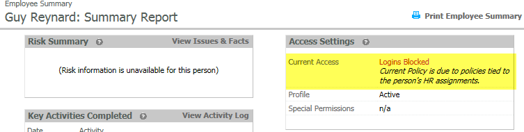

Attributes assigned to user profiles are used to control login access to the OES and participation in automated emails. Each attribute has one of five policies.
In order of restriction the policies are:
Each attribute is tied to a specific policy.
When two or more attributes in a user profile have policy settings other than "No policy" the more restrictive policy prevails.
For example, if user attributes and the associated policies are set as follows for a user, the resulting policy for the user would be "Logins Blocked" since this is the more restrictive policy.
| Attribute Type | Attribute | Policy |
| Country | France | Logins Blocked |
| City | Paris | Logins OK & Automated Invites Off |
The current policy resolution for the user can be seen in the Access Settings in the Employee Summary.

Attribute Types and Attributes are mainly defined by the customer and assigned by virtue of the HR data feed. Occasionally other individual account information or access permissions or restrictions are needed, in which case additional Attribute Types and Attributes can be manually created and assigned to those accounts outside of the HR data feed.